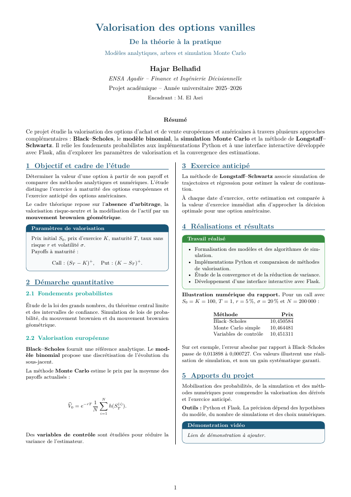

Valorisation
Valorisation des options vanilles
Comparaison de Black–Scholes et Monte Carlo avec réduction de variance, et étude de l’exercice anticipé avec Longstaff–Schwartz.
Démonstration
La démonstration est disponible dans le dossier partagé.
Voir la démonstration ↗Fiche projet

Lire la fiche PDF ↗